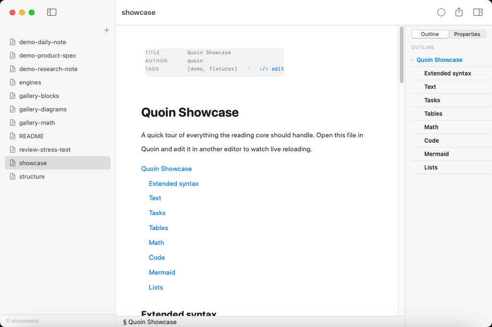
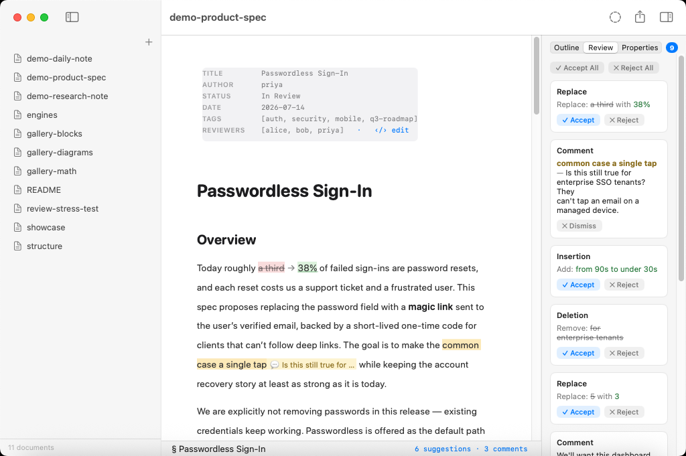
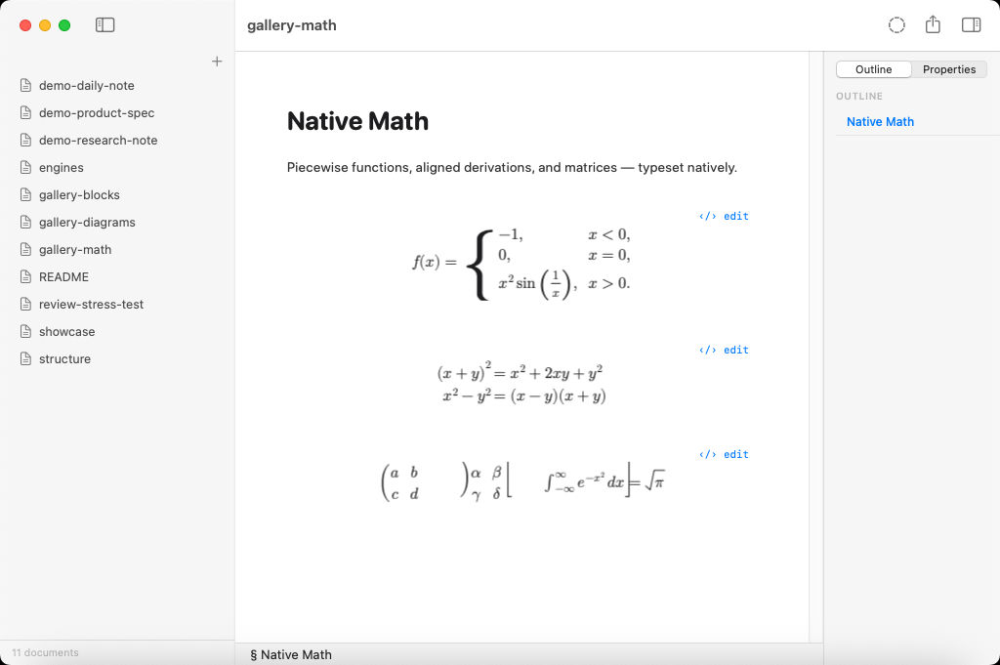
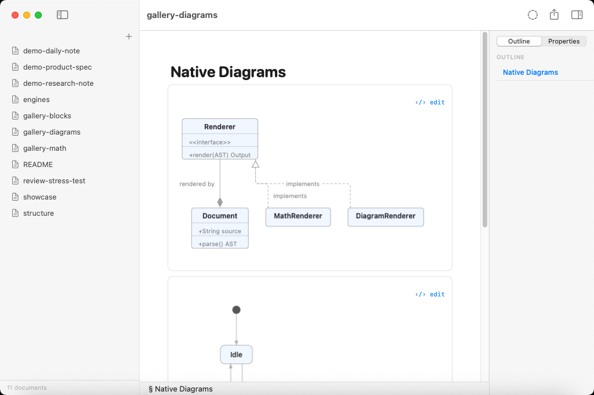
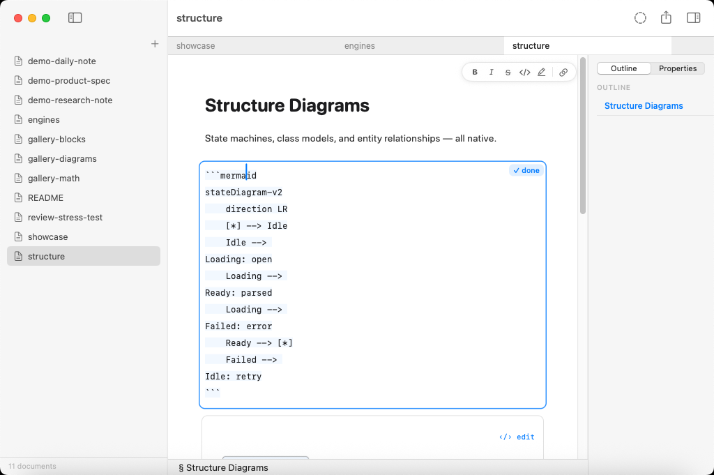

The review loop lives inside the file.
A native macOS WYSIWYG Markdown editor. Suggestions, comments, and tracked changes are plain bytes an agent or a person can write — and every untouched byte survives the round-trip.

Tracked changes as plain CriticMarkup
Suggestions and comments are CriticMarkup marks; their metadata rides along as RDFM YAML endmatter that plain renderers ignore. Because the file is the review, it is portable, git-diffable, and agent-readable.
- Marks render as tracked changes — never raw delimiters
- A review inspector: Accept / Reject / Dismiss, plus Accept All
- Every resolution is one atomic, byte-safe edit = one undo
- Review Mode (
⌃⌘R): typing becomes suggestion marks

Native math & diagrams — no browser
Vinculum · LaTeX
A TeX-quality math typesetter (~400 commands: spacing classes, stacked
limits, radicals, auto-sized fences, matrix/cases/aligned),
drawn with CoreText. No MathJax, no KaTeX.
MermaidKit · Diagrams
A native Mermaid engine (Sugiyama layering, orthogonal routing, UML markers, composite states), drawn with CoreGraphics. No Mermaid.js, no headless browser.
2389-research/MermaidKit ↗

The source is the document
The markdown string and its AST are the single source of truth — never an attributed string. The editor is a projection: edits mutate the source through a session actor, and the renderer re-projects.
- Byte-lossless round-trips for every untouched region
- Click a block to reveal its literal source, 1:1 with the file
- The caret line never jumps on a projection change
QuoinCoreis platform-free and builds on Linux
